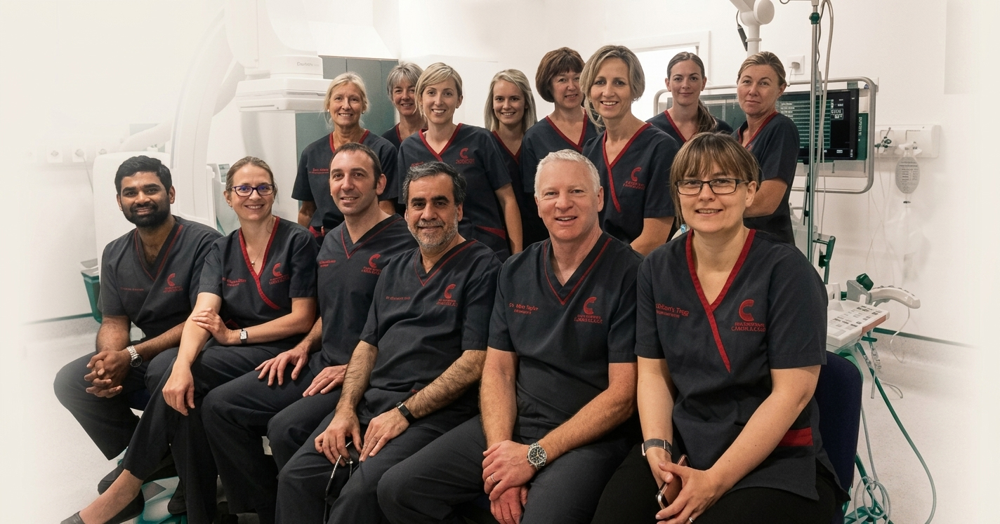
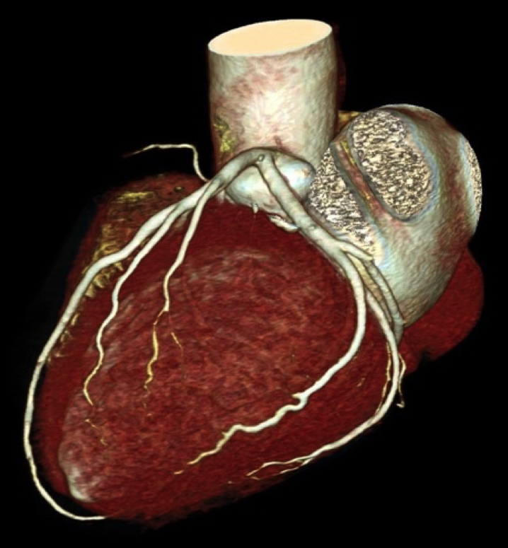
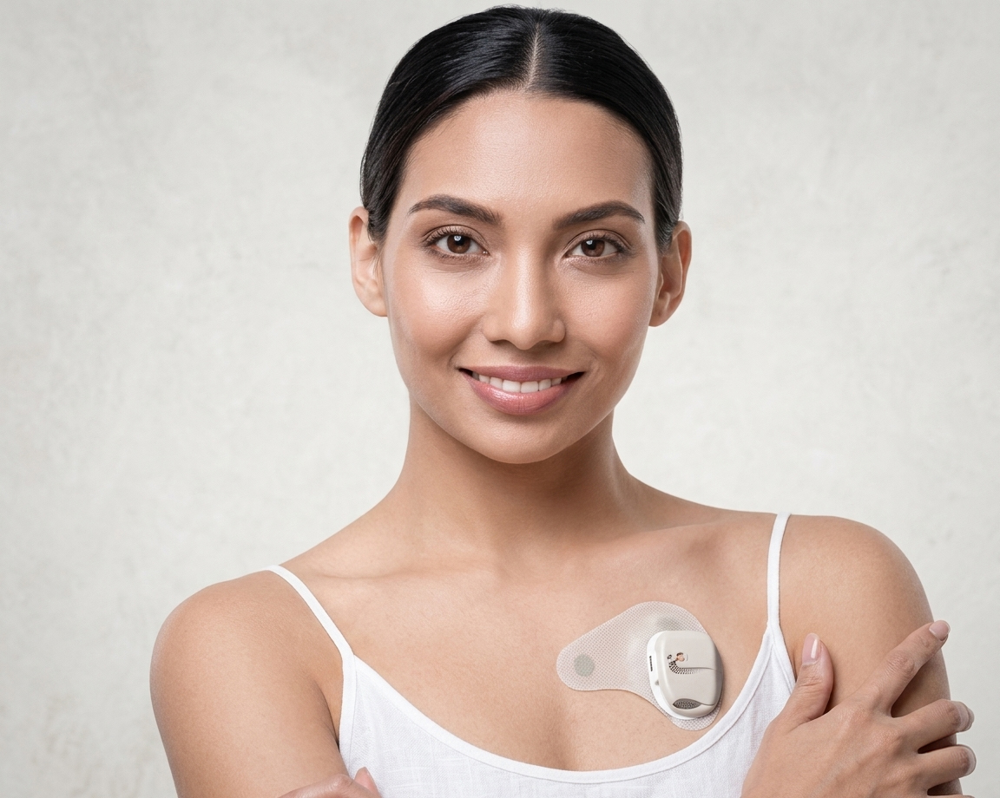
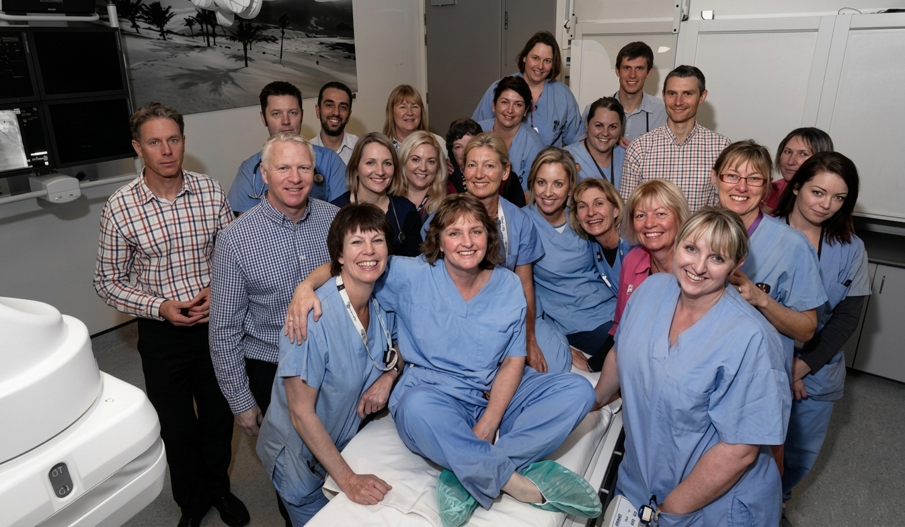

Nelson · Marlborough · New Zealand
Specialist cardiology delivered by experienced physicians — with compassion, respect, and a genuine commitment to your wellbeing and that of our community.
Specialist cardiac care at the heart of one of New Zealand's most loved regions — we're proud to serve this community.
All referrals come through your GP or practice nurse — you cannot self-refer. Once we have your referral we review the information and arrange the most suitable pathway for you.
Ask your GP or practice nurse about a cardiology referral. They'll pass your full medical history and clinical details to us so we can assess your situation properly.
Our team carefully reviews each referral to determine the most appropriate cardiac investigations or consultation. If you hold health insurance, check pre-authorisation with your insurer in advance.
We'll be in touch directly to arrange your appointment or tests. Please don't phone to chase — we contact every patient once your assessment is complete.
A GP or practice nurse referral is still required. Before your appointment, confirm with your insurer that your procedure or consultation has been authorised.
We are a Southern Cross Affiliated Provider — Southern Cross members do not require pre-authorisation for most consultations and standard tests.
A GP or practice nurse referral is still required. Many patients choose to self-fund reassurance investigations such as a 24-hour ECG, echocardiogram, or exercise stress test.
We'll discuss costs clearly during your consultation. Our team will help determine which investigations are most appropriate for your situation.

Non-invasive imaging to assess coronary artery disease risk and detect calcium deposits — often the first step in a cardiac work-up.
Learn more
Extended ambulatory heart rhythm monitoring using a small, waterproof wearable patch — no wires, no leads, just your normal life.
Learn moreWe offer appointments beyond standard clinic hours to make specialist heart care accessible around your schedule and commitments.
Learn moreUltrasound imaging of the heart to assess structure, valve function, and pumping efficiency.
Learn moreContinuous ambulatory heart rhythm recording to capture intermittent arrhythmias and palpitations over 24–48 hours.
Learn moreSupervised treadmill ECG test to evaluate heart function and detect exercise-induced cardiac abnormalities.
Learn moreAutomated BP recording over 24 hours to assess hypertension outside the clinical setting and guide treatment.
Learn moreAdvanced echocardiography from within the oesophagus for detailed imaging of heart valves and structures not visible from the chest wall.
Learn moreCardiac assessment and clearance for pilots, commercial drivers, and others requiring fitness-to-work certification.
Learn more
"To give our community the very best heart care — with compassion, respect, understanding, and expertise."Meet the team
Top of the South Cardiology operates a fully-equipped cardiac catheterisation laboratory — one of few in regional New Zealand. This means our patients can undergo invasive cardiac procedures close to home, without needing to travel to Christchurch or Wellington.
The suite is staffed by our specialist cardiologists and an experienced cardiac catheter laboratory team, delivering a high standard of care in a familiar, regional setting.
When travelling to a clinic isn't practical, we offer cardiology consultations by video or telephone — no apps or special software required, just a phone or device with internet access.
This is particularly well-suited for follow-up appointments, results reviews, and patients travelling from further afield across the Marlborough region.
Your GP may refer you for a range of reasons. Here are some of the most common situations where specialist cardiac assessment can make a meaningful difference.
Unexplained chest pain or tightness, particularly on exertion, warrants investigation to rule out cardiac causes including coronary artery disease and angina.
A sensation of racing, fluttering, or irregular heartbeats may indicate an arrhythmia. Extended heart monitoring can often identify the cause and guide treatment.
Breathlessness on exertion or at rest may indicate heart failure, valve disease, or other cardiac conditions requiring specialist assessment and treatment.
Difficult-to-control hypertension may benefit from specialist review to identify secondary causes, assess cardiac impact, and optimise long-term management.
A family history of early heart attack, sudden cardiac death, or inherited conditions such as hypertrophic cardiomyopathy may indicate that screening is appropriate.
Significantly elevated cholesterol, particularly in younger patients or with a strong family history, may warrant a coronary calcium score or CT angiography.
Unexplained fainting, blackouts, or persistent dizziness may have a cardiac cause such as an arrhythmia, conduction abnormality, or structural heart problem.
Pilots, commercial drivers, and others requiring occupational cardiac clearance can be assessed for fitness-to-fly or fitness-to-drive purposes, including insurance work-ups.
We see patients across two convenient outpatient locations in the Nelson and Marlborough region.
Wairau Hospital Campus, Hospital Road, Blenheim 7201
These numbers are for urgent cardiac matters only. For all appointment enquiries, please ask your GP to refer you and we will contact you directly.